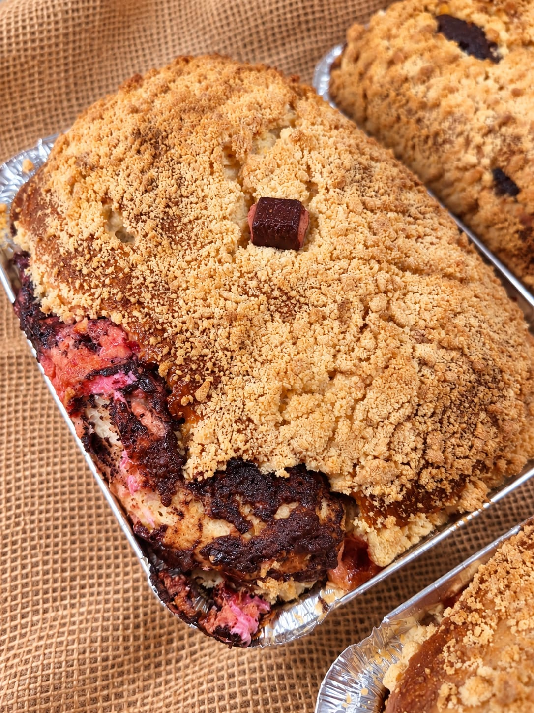
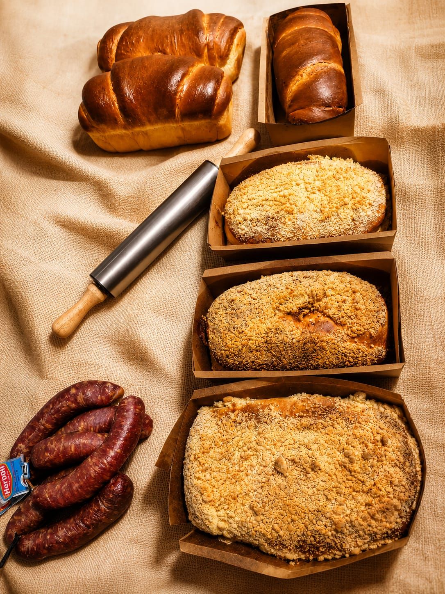
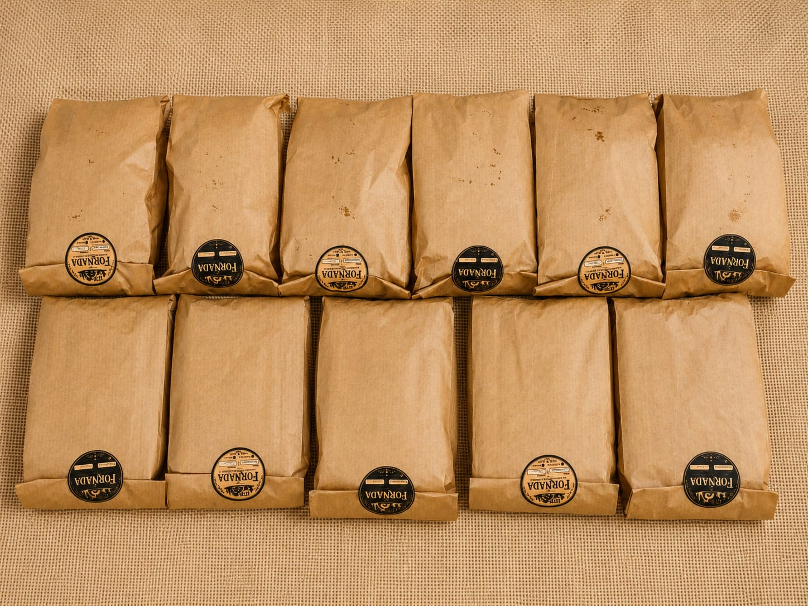
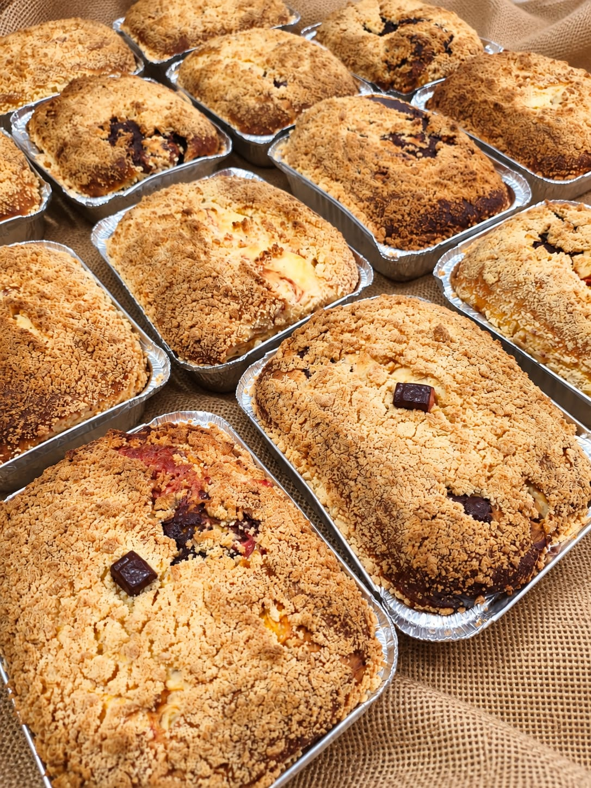
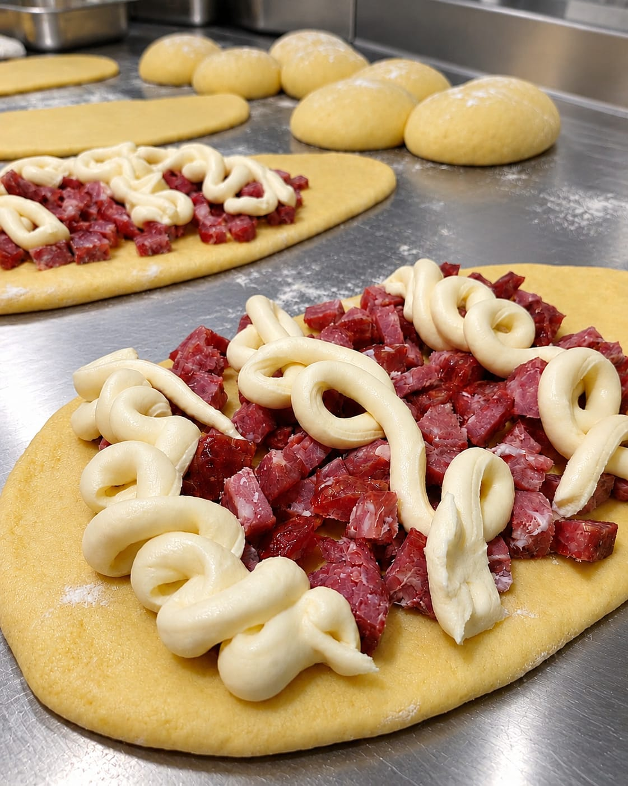
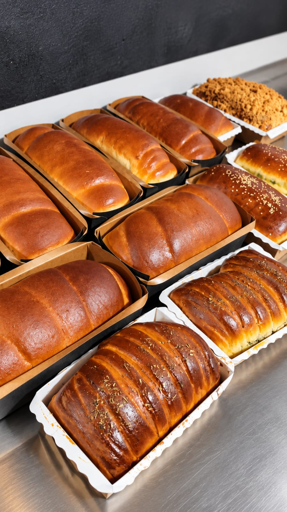

Escolha os sabores
Explore o cardápio e adicione seus favoritos à sacola. Ajuste as quantidades como preferir.
FEITO À MÃO. FEITO COM TEMPO.
Farofinha crocante, massa macia e aquele recheio generoso. Sabores que convidam a fazer uma pausa e dividir a mesa.
Escolher meus saboresDa nossa cozinha para sua mesa.
Preparado sob encomenda, para você.

ESCOLHA SEU PRÓXIMO FAVORITO
Do café da manhã ao encontro de domingo.
Tem sempre um sabor para o seu momento.


NOSSA COZINHA
Uma cuca no café. Um pão dividido ainda na mesa. Uma encomenda para reunir quem a gente gosta.
Na Fornada, os detalhes fazem parte da receita: o recheio, a farofa, o preparo e o cuidado para chegar até você. Pães, cucas e tortas frias feitos sob encomenda, em São Leopoldo e região.
Um pouco da nossa rotina no Instagram ↗DO SEU JEITO, SEM COMPLICAÇÃO
Explore o cardápio e adicione seus favoritos à sacola. Ajuste as quantidades como preferir.
Revise os itens e as quantidades. O pagamento por Pix será combinado no Direct.
Copie o resumo e envie no Instagram. Confirmamos disponibilidade, pagamento e detalhes de entrega ou retirada.
SAINDO DO FORNO, DIRETO PARA O FEED
Mais sabores, bastidores e aquela vontade de pedir uma fatia.
Visitar nosso Instagram ↗

